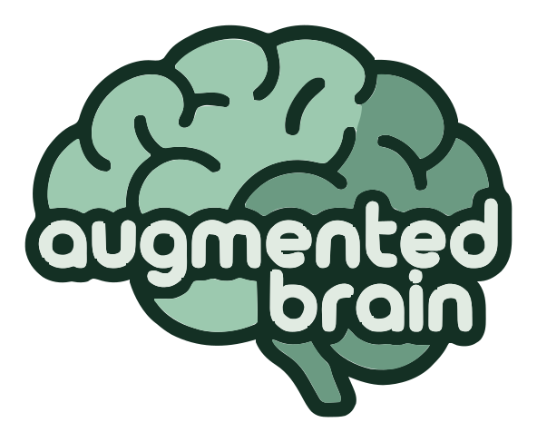

augmented brain
augmented brain

Tu asistente de IA lo olvida todo al cerrar la sesión.
augmented brain le da memoria y una forma de trabajar: tareas, áreas y reglas que recuerda de una sesión a otra, guardadas en ficheros Markdown que son tuyos.
curl -fsSL https://github.com/icalvete/augmented-brain/releases/latest/download/install.sh | shaugmented-brain initaugmented-brain doctor
Linux o macOS, con Claude Code. Sin root. Después, abre Claude Code en tu carpeta de trabajo.
Sigue donde lo dejaste
Una tarea aparcada un día y retomada al siguiente, en una sesión nueva que no sabe nada de la primera.
Sin repetir contexto. El asistente leyó la tarea y comprobó el estado real antes de fiarse de ella.
Qué te da
Tareas que duran
Todo trabajo pasa por definir, analizar, planificar, ejecutar con diario, validar y cerrar. Apárcala y retómala en cualquier sesión.
Áreas
Cada responsabilidad, de tu plataforma a un proyecto propio, agrupa sus tareas y lo que has aprendido de ella.
Reglas que se cumplen
Cómo te gusta trabajar se carga en cada sesión. Las reglas importantes se hacen cumplir, no solo se piden.
Un guardia
Nada de commit ni push salvo que lo permitas, nunca root, ningún secreto en comandos ni ficheros. Los perfiles de AWS de producción y los hosts intocables te piden confirmación, también por ssh.
Trabajo y personal, separados
Cada espacio tiene su memoria, sus reglas y su copia de seguridad. La carpeta en la que abres el asistente elige el espacio.
Copia y restauración
Cada espacio va a un repositorio git privado tuyo. Si pierdes el portátil, lo recuperas todo en uno nuevo.
Comandos
Unos pocos, para montarlo todo. El trabajo de cada día ocurre dentro de Claude Code.
| Comando | Qué hace |
|---|---|
augmented-brain init | Monta augmented brain y tu primer espacio |
augmented-brain space add | Añade otro espacio: personal, un cliente… |
augmented-brain doctor | Dice qué falta y cómo arreglarlo |
augmented-brain check | Revisa las notas del espacio de esta carpeta y rehace su índice |
augmented-brain backup setup <url> | Conecta este espacio a un repositorio git privado |
augmented-brain backup | Guarda los últimos cambios (--all para todos los espacios) |
augmented-brain restore <url> | Recupera un espacio en una máquina nueva |
En Claude Code bastan tus palabras: “nueva tarea…”, “¿qué tengo pendiente?”, “apárcala”, “apunta esto en el buzón”.